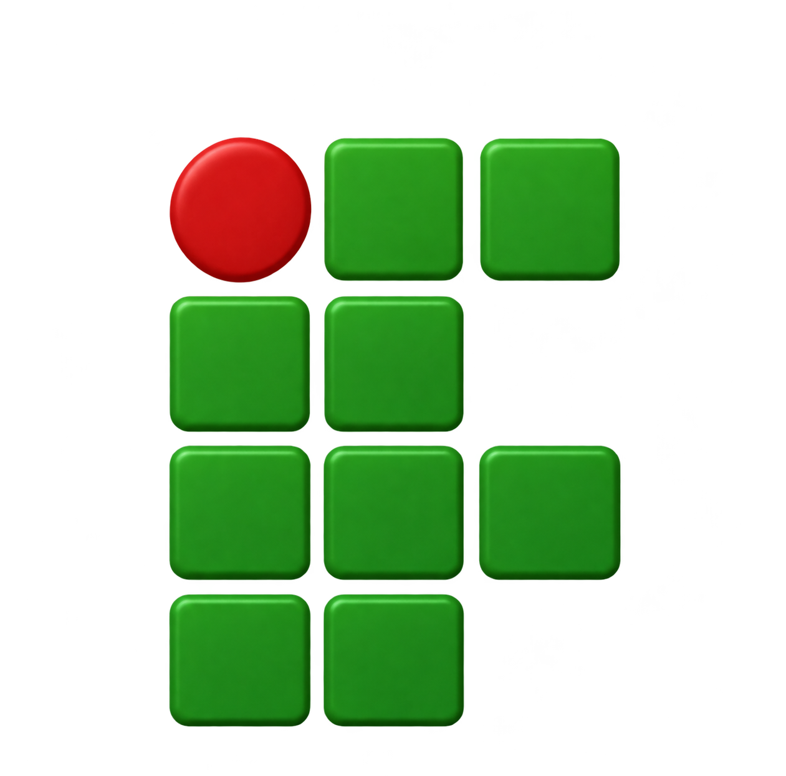

CONFIGURAÇÃO INICIAL
Bem-vindo ao IFBA OS
Prepare seu ambiente de estudo. Você pode alterar estas escolhas depois.
Escolha aplicativos para instalar
A seleção será salva neste usuário. A instalação de pacotes ainda não está conectada.

Prepare seu ambiente de estudo. Você pode alterar estas escolhas depois.
A seleção será salva neste usuário. A instalação de pacotes ainda não está conectada.